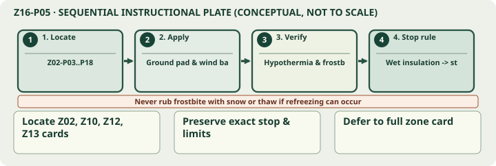

Z16-P05 · Field reference atlas · New manuscript
Hypothermia, Cold-Water Shock and Frostbite Cross-Reference
Integrate cold-exposure prevention, hypothermia gentle handling, and non-refreezing frostbite rules across Z02, Z10, Z12, and Z13.
When it applies · Cold rain, wind chill, winter outages, snow travel, and cold-water immersion.
Equipment · Full offline reader (Z02, Z10, Z12, Z13), primary zone cards, and local emergency and agency references.

Actions
- Prioritize dry ground insulation, windproof shelter, and vapor, moisture control (Z02-P03, Z12-P04) before cold stress advances to shivering cessation or confusion.[A01, E03, X02]
- Handle severe hypothermia gently, insulate from ground, avoid rapid peripheral rubbing or alcohol, and activate EMS early (Z10-P42, Z12-P08); for frostbite, never rub with snow or thaw tissue if refreezing is possible (Z10-P44).[A01, M11, M12, X02]
- During winter power outages (Z13-P18, Z15-P13), consolidate into one safe insulated interior room or move early to a designated public warming center rather than using unsafe unvented heaters.[A01, U06, D19]
Failure recognition · Rubbing frostbitten digits with snow, thawing feet before a cold hike out, or rough handling of severely hypothermic patients worsens tissue loss and cardiac arrhythmia.[M11, M12]
Verify · Dry ground barrier, gentle warming, non-refreezing frostbite rule, and warming-center, EMS triggers are preserved intact.[E03, M11, M12]
Stop or change course · Stop outdoor travel and activate rescue immediately when shivering stops, speech slurs, or coordination fails.[M11, X02]
Evidence and editorial notes
- A01 · FEMA / Ready.gov · Make a Plan (current web edition)
- Section: Cross-zone emergency prioritization and stop-threshold preservation · Conditions: Synthesizing Z01-Z15 emergency decision summaries in Z16
Support: Condensed emergency references must retain exact life-safety priorities, evacuation triggers, and call-911 thresholds from upstream primary guidance.
Limitations: Any summary omitting an upstream exception, stop rule, or specialist hold is invalid and must defer to the full zone card. · Conflicting evidence: None noted.
Editorial note: Governs Z16 emergency cross-reference fidelity. · Specialist reviewer: Emergency management and editorial QA reviewer
Primary source · checked 2026-11-24 - D19 · National Weather Service · Winter Weather Safety: Stranded Motorists (Current web edition)
- Section: If stranded in a vehicle · Conditions: Stationary stranded vehicle in an open winter storm, exhaust clear, crew can monitor conditions
Support: Stay with the vehicle when safe, alert responders, and follow NWS precautions if running the engine briefly for warmth.
Limitations: Do not run with blocked exhaust or suspected CO. Timing does not make idling safe and is no indoor exception. · Conflicting evidence: See A02 claim audit for boundaries.
Editorial note: Added in A02 to separate a consequential source boundary. · Specialist reviewer: Winter SAR and CO safety
Primary source · checked 2026-11-25 - E03 · NPS · Finding and Setting Up a Campsite (current web edition)
- Section: Finding a campsite · Conditions: Legal established or designated campsite
Support: Choose a durable legal site suited to the conditions. Campsite rules and physical risks vary by park.
Limitations: Established sites can still develop new hazard trees or flood risk after storms. · Conflicting evidence: None; requires live site inspection even at designated pads.
Editorial note: First gate of shelter site selection. · Specialist reviewer: Land management and wilderness shelter
Primary source · checked 2026-11-24 - M11 · CDC · Symptoms of Mild TBI and Concussion (2025)
- Section: Danger signs in adults; Danger signs in children · Conditions: Head impact or suspected mild brain injury; age matters
Support: Seek emergency care for danger signs such as worsening headache, repeated vomiting, altered behavior or difficulty waking.
Limitations: Spinal precautions, older-adult blood thinners, and return to activity require separate clinical or dispatcher guidance. · Conflicting evidence: See A02 claim audit for boundaries.
Editorial note: Grounds head-trauma, concussion, and spinal-motion-restriction cards. · Specialist reviewer: Neurotrauma and wilderness EMS
Primary source · checked 2026-11-25 - M12 · NIH / MedlinePlus · Animal Bites (current web edition)
- Section: Animal Bites, Rabies Exposure, and Wound Infection · Conditions: Wild or domestic mammal bites or scratches breaking skin
Support: Wash bite wounds promptly with soap and clean running water, control bleeding, and obtain prompt medical evaluation for infection risk, tetanus status, and rabies post-exposure assessment.
Limitations: Bat encounters in sleeping areas can cause unrecognized bites requiring public-health rabies consultation. · Conflicting evidence: None; aligns with CDC rabies guidance.
Editorial note: Anchors mammal-bite hygiene and public-health rabies referral. · Specialist reviewer: Infectious disease and emergency medicine
Primary source · checked 2026-11-24 - U06 · Minnesota Dept. of Health · Wells and Borings Safety (current web edition)
- Section: Wells and Borings > Minnesota Private Well Standards and Disinfection · Conditions: Minnesota and Upper Midwest private residential wells
Support: Use a licensed Minnesota well contractor for wellhead repair, electrical pump work, or shock disinfection after flooding or backflow; maintain sanitary well caps and isolate well casings from surface snowmelt and agricultural runoff.
Limitations: DIY well-cap removal or improper chlorine mixing risks aquifer contamination and electrical shock. · Conflicting evidence: None; regionalizes EPA-WELL for Minnesota conditions.
Editorial note: Anchors Upper Midwest private-well resilience and licensed-trade handoff. · Specialist reviewer: Minnesota environmental health and licensed well trades
Primary source · checked 2026-11-24 - X02 · Minnesota DNR · Cold Water Safety (current web edition)
- Section: Cold Water Safety > Cold Shock, Swim Failure and Hypothermia · Conditions: Immersion in water below 70°F (especially below 50°F / winter ice water)
Support: Cold shock can cause involuntary gasping and rapid breathing. Grip and swimming may deteriorate rapidly; flotation and early rescue matter. Onset and severity vary.
Limitations: Strong swimmers drown rapidly from cold shock and muscle incapacitation without flotation. · Conflicting evidence: Refutes myth that hypothermia is the only immediate cold-water killer.
Editorial note: Core physiological evidence for Z12 ice-breakthrough and maritime immersion cards. · Specialist reviewer: Cold-water rescue and wilderness medicine
Primary source · checked 2026-11-24
Source lineage · New manuscript (Z16 P20 emergency index) · Classification · New manuscript.